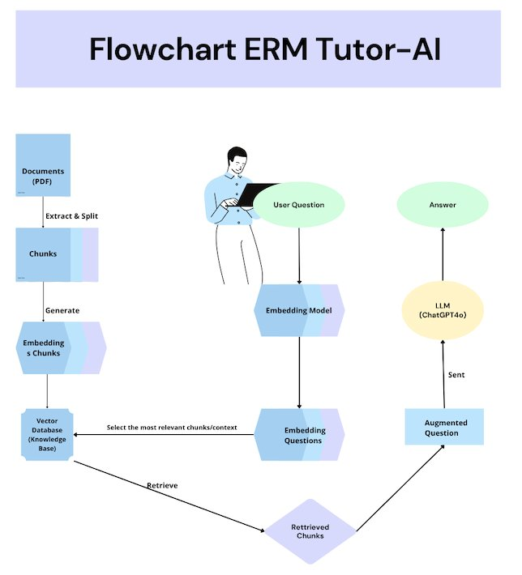
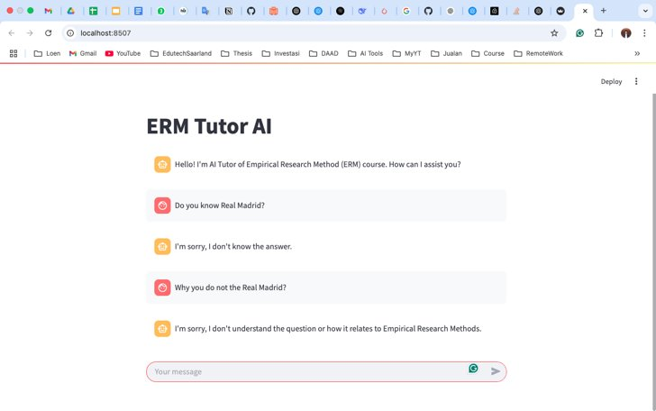
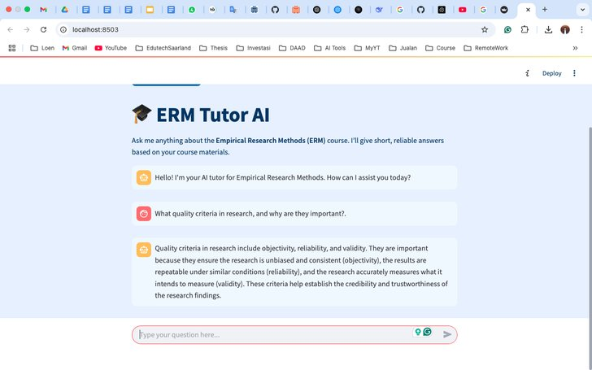
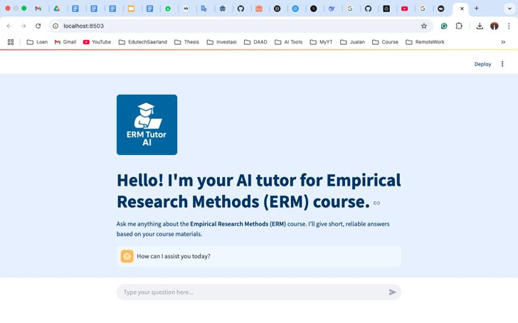
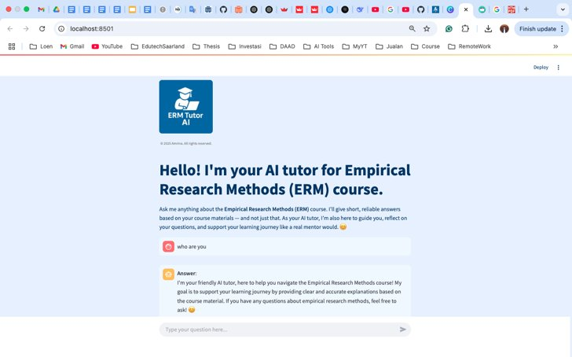

An AI tutor for the Empirical Research Methods course that answers from the course's own materials, shows students where each answer comes from, and talks like a tutor, not a search engine.
20 questions from the weekly ERM assignments, answered by ERM Tutor-AI and by ChatGPT-4o, rated by two course instructors on a 7-point rubric.
Large language models can sound confident and still be wrong. In a methods course, a wrong explanation of a p-value or an ANOVA harms learning, so the tutor is built around grounding and transparency.
Retrieval-Augmented Generation: retrieve the relevant course passages first, then let the model answer from them.

A design-based research approach: each version was reviewed and refined for usability, visual identity and pedagogical orientation.




Rubric adapted from Lee (2024): accuracy, relevance, excessive or insufficient information, user perception, and tutoring behaviour. 40 ratings per system.
Two-way ANOVA: model F(1, 76) ≈ 32.8, p < .001; no significant effect of instructor or interaction.